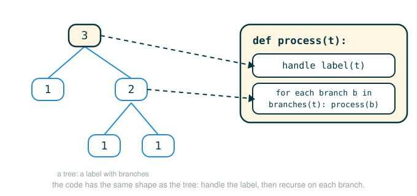

2.3 Trees as Recursive Data
By the end of this lesson you will be able to do four things. You will be able to say what makes a tree a recursive data structure and why that word "recursive" is literal here, not a metaphor. You will be able to build trees and take them apart using a small set of functions called a constructor and selectors, without ever caring how the tree is stored underneath. You will be able to write functions that walk a whole tree by following the shape of the data, and you will be able to predict what they produce by tracing the calls by hand.
The single habit this lesson builds is this: when a piece of data is made of smaller pieces of the same kind, the function that processes it almost always calls itself once on each smaller piece. The data is recursive, so the code is recursive. Once you see that one pattern, every function in this lesson is a variation on it.
A Tree Is Built From Smaller Trees
Picture a family diagram. There is one person at the top, and below them are their children, and below each child are that child's own children, and so on:
Alex
/ \
Maya Jordan
/ \
Sam LeeHere is the part that matters. If you cover up Alex with your hand and look only at the part of the diagram hanging off Jordan, what you see is still a family diagram. It has someone at the top (Jordan) and children below (Sam and Lee). The piece looks exactly like the whole, just smaller.
That is the entire idea of a tree. A tree is a value sitting at the top, called the root label, together with zero or more smaller trees hanging beneath it, called the branches. Each branch is itself a complete tree, with its own root label and its own branches. The definition uses the word "tree" inside itself, and that is allowed, because each time you step into a branch you are looking at a strictly smaller tree, and eventually you reach a tree with no branches at all.
A tree with no branches is called a leaf. In the diagram, Maya, Sam, and Lee are leaves. A leaf is still a real tree; it just has a label and an empty list of branches. Leaves are where the recursion bottoms out.
A tree is:
a root label
a list of branches, where each branch is itself a tree
A leaf is a tree whose list of branches is empty.Trees show up everywhere in this course and beyond: arithmetic expressions, the folders on your computer, the moves in a game, the structure of a sentence, and the call structure of recursive functions. Learning to process them with one repeatable pattern pays off many times over.
The Closure Property: Why Lists Can Hold Trees
Before we represent trees, notice the feature of lists that makes trees possible at all. A list element can be anything, including another list. When the result of combining values can itself be fed back in as a value to combine, we say the combining method has the closure property. Lists have it: you can put lists inside lists inside lists, with no special limit.
The official text demonstrates this with a flat pair and a deeply nested list:
# (1)
one_two = [1, 2]
nested = [[1, 2], [], [[3, False, None], [4, lambda: 5]]]
Read nested slowly. Its first element is the list [1, 2]. Its second element is the empty list [], which is a real element, not nothing. Its third element is itself a list of two lists, and one of those inner lists holds a number, a boolean, the value None, and even a function made with lambda. A list can hold values, and it can hold other lists built by exactly the same rule. That is the closure property in action, and it is precisely what lets us store a tree, whose branches are trees, whose branches are trees, as nothing more than lists inside lists.
The Tree Abstraction
We are going to work with trees through three functions and two predicates. Keep this distinction front of mind, because it is the whole point of an abstraction: there is the constructor that builds a tree, the selectors that pull pieces back out, and the underlying representation, which we agree not to touch directly.
tree(label, branches) ... constructor: build a tree from a label and a list of branches
label(t) ... selector: return the root label of tree t
branches(t) ... selector: return the list of branches of tree tWe also use two predicates, functions that return True or False:
is_tree(t) ... is this value a well-formed tree?
is_leaf(t) ... does this tree have no branches?The promise of the abstraction is that any code you write using only tree, label, branches, is_tree, and is_leaf will keep working no matter how a tree is actually stored. That promise is what lets you reason about trees as ideas instead of as lists.
A List Representation of Trees
Here is one concrete way to store a tree. Represent it as a list whose first element is the root label and whose remaining elements are the branches. Because each branch is itself a tree, each branch is stored the same way, as a list. The official constructor and selectors look like this:
# (2)
def tree(root_label, branches=[]):
for branch in branches:
assert is_tree(branch), 'branches must be trees'
return [root_label] + list(branches)
def label(tree):
return tree[0]
def branches(tree):
return tree[1:]
The constructor takes the root label and a list of branches, checks that each branch is itself a valid tree, and then returns a single list: the label in front, followed by all the branches. The selector label reads back the first element. The selector branches reads back everything after the first element, which is the list of branch trees.
Notice the parameter name in the official constructor: root_label, not just label. The author chose root_label to make it obvious that this value belongs to the root of the tree being built, separate from the selector function named label. Notice also branches=[], a default value, so that calling tree(5) with no branches gives you a leaf.
Follow the Line: the Constructor
Walk through the constructor's body one line at a time. Each row says what the line does, and the final row states the action the function performs.
def tree(root_label, branches=[]):
├─ def tree ................ defines a function named tree
├─ root_label .............. first input: the value that sits at the root
├─ branches=[] ............. second input: the list of branch trees, defaulting to no branches
└─ action .................. begins the definition of the tree constructor
for branch in branches:
├─ for branch in ....... visits each branch in the branches list, one at a time
└─ action .............. starts a loop body that runs once per branch
assert is_tree(branch), 'branches must be trees'
├─ is_tree(branch) . checks whether this branch is itself a valid tree
├─ assert .......... requires that check to be True, or stops with an error
├─ 'branches...' .. the message shown if the check fails
└─ action .......... rejects any branch that is not a real tree
return [root_label] + list(branches)
├─ [root_label] ........ a new one-element list holding the root label
├─ list(branches) ...... a fresh copy of the branch list
├─ + ................... joins them into one list, label first
└─ evaluates to ........ the finished tree, as a list with the label at the frontThe call list(branches) makes a shallow copy of the incoming branch sequence. That small move means the new tree does not secretly share the exact list object the caller passed in, which keeps later code from accidentally mutating the tree through a leftover reference.
Building and Reading a Tree
Now build a real tree. This expression makes a tree whose root label is 3, with two branches: a leaf labeled 1, and a subtree labeled 2 that itself has two leaf branches labeled 1:
# (3)
t = tree(3, [tree(1), tree(2, [tree(1), tree(1)])])
Underneath, in the list representation, t is stored as nested lists. Each tree is a list with its label first:
[3, [1], [2, [1], [1]]]And drawn as a tree, the same value looks like this:
3
/ \
1 2
/ \
1 1Now exercise the selectors at the interpreter. Reading these transcripts is the fastest way to feel how label and branches peel the structure apart:
>>> t = tree(3, [tree(1), tree(2, [tree(1), tree(1)])])
>>> t
[3, [1], [2, [1], [1]]]
>>> label(t)
3
>>> branches(t)
[[1], [2, [1], [1]]]
>>> label(branches(t)[1])
2
>>> is_leaf(t)
False
>>> is_leaf(branches(t)[0])
TrueTrace the trickier line, label(branches(t)[1]), from the inside out. First branches(t) returns the list of two branches, [[1], [2, [1], [1]]]. Then [1] selects the branch at index 1, which is the subtree [2, [1], [1]]. Then label(...) reads that subtree's root label, which is 2. The last line works the same way: branches(t)[0] is the first branch, the leaf [1], and is_leaf reports True because that tree has no branches of its own.
Validating Trees
The constructor calls is_tree to check each branch, so we need that predicate. A value is a well-formed tree when it is a non-empty list and every one of its branches is also a well-formed tree. That second condition is recursive: to validate a tree, validate each branch, which means validating each branch's branches, and so on.
# (4)
def is_tree(tree):
if type(tree) != list or len(tree) < 1:
return False
for branch in branches(tree):
if not is_tree(branch):
return False
return True
def is_leaf(tree):
return not branches(tree)
The first check rejects anything that is not a list, or that is a list with no room for even a label. The loop then demands that every branch pass the same is_tree test. If any branch fails, the whole thing is not a tree. The predicate is_leaf is shorter: branches(tree) returns the branch list, and not on a list is True exactly when that list is empty, so a tree with no branches is a leaf.
Follow the Line: the Recursive Check
The heart of is_tree is the loop. Here is what each line does, ending in the action it performs:
for branch in branches(tree):
├─ branches(tree) ....... gets this tree's list of branches
├─ for branch in ........ visits each branch one at a time
└─ action ............... checks every branch, not just the first
if not is_tree(branch):
├─ is_tree(branch) .. asks whether this branch is itself a valid tree
├─ not .............. flips the answer, so True means "this branch is invalid"
└─ action ........... detects a bad branch
return False
└─ action ....... reports the whole value is not a tree and stopsThe reason this is recursive is plain in is_tree(branch): deciding whether the big value is a tree requires deciding whether each smaller branch is a tree. Same question, smaller input.
Counting Leaves
Now write a function over trees. To count the leaves in a tree, follow the shape of the data. If the tree is a leaf, it is one leaf, so the answer is 1. Otherwise, count the leaves in each branch and add those counts together. That is the official function, including its exact parameter name tree:
The structure of the recursive function lines up piece for piece with the structure of the tree it walks, as the figure below makes visible.

# (5)
def count_leaves(tree):
if is_leaf(tree):
return 1
else:
branch_counts = [count_leaves(b) for b in branches(tree)]
return sum(branch_counts)
The list comprehension [count_leaves(b) for b in branches(tree)] calls count_leaves once on every branch, producing a list of per-branch leaf counts. Then sum(branch_counts) adds them into a single total. The base case, a leaf, is what stops the recursion from going forever; every recursive call moves to a strictly smaller branch, and leaves have no branches.
Follow the Line: the Recursive Step
branch_counts = [count_leaves(b) for b in branches(tree)]
├─ branches(tree) ......... the list of this tree's branches
├─ for b in ............... takes each branch in turn as b
├─ count_leaves(b) ........ counts the leaves inside that one branch
├─ [ ... ] ................ collects those per-branch counts into a list
└─ action ................. binds branch_counts to the list of branch leaf counts
return sum(branch_counts)
├─ sum(branch_counts) ..... adds every per-branch count together
└─ evaluates to ........... the total number of leaves in the whole treeA Bridge You Can Check by Hand
Before the official-sized example, count leaves on a tree small enough to verify in your head. Take the tree from (3):
3
/ \
1 2
/ \
1 1There are three leaves: the lone 1 on the left, and the two 1s under the 2. The root 3 and the inner 2 are not leaves, because they have branches. So count_leaves(t) should be 3. Walk the recursion to confirm it:
count_leaves(3-tree) not a leaf; count its two branches
├─ count_leaves(1-tree) leaf -> 1
└─ count_leaves(2-tree) not a leaf; count its two branches
├─ count_leaves(1-tree) leaf -> 1
└─ count_leaves(1-tree) leaf -> 1
branch_counts = [1, 1] sum -> 2
branch_counts = [1, 2] sum -> 3The call structure mirrors the data structure exactly: a tree with two branches produces two recursive calls, and each of those expands into its own branch calls until it hits a leaf.
Fibonacci Trees
In Section 1.7 you computed fib(n) with tree recursion, where each call branched into fib(n-2) and fib(n-1). A Fibonacci tree is that exact call structure captured as data: the branching you traced by hand is now an object you can hold. A Fibonacci tree is a tree whose shape records the recursive calls used to compute a Fibonacci number. The root label is the Fibonacci value, and its two branches are the Fibonacci trees for the two smaller subproblems. Here is the official function. Note the exact form of the recursive line, which assigns both subtrees in a single tuple assignment:
# (6)
def fib_tree(n):
if n == 0 or n == 1:
return tree(n)
else:
left, right = fib_tree(n-2), fib_tree(n-1)
fib_n = label(left) + label(right)
return tree(fib_n, [left, right])
The base case, n == 0 or n == 1, returns a leaf whose label is n itself, because the Fibonacci values and are just 0 and 1. Otherwise the function builds the trees for and , reads their root labels, adds them to get this node's Fibonacci value, and assembles a new tree with those two subtrees as branches. The label arithmetic here, label(left) + label(right), is the Fibonacci recurrence
acting directly on the labels at the top of the two branches.
Follow the Line: Building the Node
left, right = fib_tree(n-2), fib_tree(n-1)
├─ fib_tree(n-2) ......... the full Fibonacci tree for n minus two
├─ fib_tree(n-1) ......... the full Fibonacci tree for n minus one
├─ left, right = ......... names the first subtree left and the second right
└─ action ................ binds both subtrees at once
fib_n = label(left) + label(right)
├─ label(left) ........... the Fibonacci value at the root of the left subtree
├─ label(right) .......... the Fibonacci value at the root of the right subtree
├─ + ..................... adds them, applying the Fibonacci recurrence
└─ action ................ binds fib_n to this node's Fibonacci value
return tree(fib_n, [left, right])
├─ [left, right] ......... a list holding the two subtrees as branches
├─ tree(fib_n, ...) ...... builds a new tree with that value and those branches
└─ evaluates to .......... the Fibonacci tree rooted at fib_nDrawn out, fib_tree(4) has the root label 3, because , and every branch is itself a full Fibonacci tree, not just a number:
3
/ \
1 2
/ \
1 1
/ \
0 1At the interpreter, asking for a larger Fibonacci tree shows the whole nested-list structure, and counting its leaves reuses count_leaves unchanged:
>>> fib_tree(5)
[5, [2, [1], [1, [0], [1]]], [3, [1, [0], [1]], [2, [1], [1, [0], [1]]]]]
>>> count_leaves(fib_tree(5))
8The leaf count is meaningful: the leaves of a Fibonacci tree are exactly the base cases hit while computing , so count_leaves(fib_tree(5)) being 8 tells you how many times the bottom of the recursion was reached.
Trees for Integer Partitions
Trees can record decisions, not just values. Recall the integer partition problem: count the ways to write a positive integer n as a sum of positive parts no larger than m. Every partition of n either uses at least one part of size m, or it uses none at all and is built only from smaller parts. Those two cases cover all the possibilities and never overlap, which is why each step offers exactly two choices, and we can make each choice a branch of a tree:
left branch ... use at least one part of size m
right branch ... use no part of size m, and only consider parts smaller than mThe official function builds the whole decision tree. The leaves are labeled True for a path that lands exactly on a sum of n, and False for a path that overshoots or runs out of part sizes:
# (7)
def partition_tree(n, m):
"""Return a partition tree of n using parts of up to m."""
if n == 0:
return tree(True)
elif n < 0 or m == 0:
return tree(False)
else:
left = partition_tree(n-m, m)
right = partition_tree(n, m-1)
return tree(m, [left, right])
When n reaches exactly 0, the choices so far form a valid partition, so the tree is a leaf labeled True. When n goes negative or m reaches 0 with n still positive, the path has failed, so the tree is a leaf labeled False. Otherwise the node is labeled m, with the left subtree exploring "use an m" by reducing n by m, and the right subtree exploring "skip m" by reducing the largest allowed part to m - 1.
Follow the Line: the Two Choices
left = partition_tree(n-m, m)
├─ n-m ................... the remaining total after using one part of size m
├─ m ..................... the largest part size stays m, so m can be reused
├─ partition_tree(...) ... the full tree of choices that begin by using an m
└─ action ................ binds left to the "use an m" subtree
right = partition_tree(n, m-1)
├─ n ..................... the total is unchanged, since no part was used
├─ m-1 ................... the largest allowed part shrinks, so m is never used again
├─ partition_tree(...) ... the full tree of choices that avoid m
└─ action ................ binds right to the "skip m" subtree
return tree(m, [left, right])
├─ m ..................... this node records the part size under consideration
├─ [left, right] ......... the two subtrees for the two choices
└─ evaluates to .......... the decision tree rooted at the choice about mBuilding a small one at the interpreter shows the structure, with True and False leaves marking which paths succeed:
>>> partition_tree(2, 2)
[2, [True], [1, [1, [True], [False]], [False]]]This is the data-structure twin of the partition-counting function from Section 1.7, the one that returned just a count of solutions. You don't need to recall it to follow this code; the point is only that here the tree keeps the entire shape of the decisions, so we can walk it later to print the partitions themselves.
Printing the Successful Partitions
To turn a partition tree into a list of actual partitions, walk it while carrying the choices made so far. The official printer threads a partition list down through the recursion. Going left means "use m," so it appends m; going right means "skip m," so it leaves the list unchanged. At each True leaf, it prints the accumulated parts joined with plus signs:
# (8)
def print_parts(tree, partition=[]):
if is_leaf(tree):
if label(tree):
print(' + '.join(partition))
else:
left, right = branches(tree)
m = str(label(tree))
print_parts(left, partition + [m])
print_parts(right, partition)
Follow the Line: Carrying the Choices
left, right = branches(tree)
├─ branches(tree) ........ the two subtrees, "use m" then "skip m"
├─ left, right = ......... names them left and right
└─ action ................ unpacks the two branches
m = str(label(tree))
├─ label(tree) ........... the part size recorded at this node
├─ str(...) .............. turns it into text for joining later
└─ action ................ binds m to that part size as a string
print_parts(left, partition + [m])
├─ partition + [m] ....... a new list with m added, recording that we used m
├─ print_parts(left, ...) walks the "use m" subtree with the larger partition
└─ action ................ explores every successful partition that uses m
print_parts(right, partition)
├─ print_parts(right, ...) walks the "skip m" subtree with the partition unchanged
└─ action ................ explores every successful partition that avoids mNotice partition + [m] builds a brand-new list rather than mutating the shared one, so the left branch's bookkeeping never leaks into the right branch. Running it on a larger problem prints every partition of 6 using parts up to 4:
>>> print_parts(partition_tree(6, 4))
4 + 2
4 + 1 + 1
3 + 3
3 + 2 + 1
3 + 1 + 1 + 1
2 + 2 + 2
2 + 2 + 1 + 1
2 + 1 + 1 + 1 + 1
1 + 1 + 1 + 1 + 1 + 1Right-Binarizing a Tree
Sometimes a tree has more than two branches, and we want a strictly binary version. Right-binarizing keeps the first branch as-is and groups all the remaining branches under a single new branch on the right, then repeats this everywhere. Here is the official function, including its docstring:
# (9)
def right_binarize(tree):
"""Construct a right-branching binary tree."""
if is_leaf(tree):
return tree
if len(tree) > 2:
tree = [tree[0], tree[1:]]
return [right_binarize(b) for b in tree]
This function works directly on the underlying list representation rather than through the selectors, which is unusual; it is doing a structural surgery that is easier to express on raw lists. If the tree is a leaf, there is nothing to regroup, so it comes back unchanged. If the list has more than two elements, the line tree = [tree[0], tree[1:]] rebuilds it as a two-element list: the original first element, followed by a single list holding everything else. Then the comprehension recurses into each element so the same regrouping happens at every level.
Follow the Line: the Regrouping Step
tree = [tree[0], tree[1:]]
├─ tree[0] ............... the first element, kept on its own
├─ tree[1:] ............. all the remaining elements, gathered into one list
├─ [ ... ] .............. a new two-element list: first element, then the rest
└─ action ............... rewrites this node so it has exactly two parts
return [right_binarize(b) for b in tree]
├─ for b in tree ........ visits each part of the (now two-part) node
├─ right_binarize(b) .... applies the same regrouping deeper inside
├─ [ ... ] .............. collects the rebuilt parts into a list
└─ evaluates to ......... the fully right-branching version of the treeA flat seven-element list becomes a deeply nested, right-leaning structure:
>>> right_binarize([1, 2, 3, 4, 5, 6, 7])
[1, [2, [3, [4, [5, [6, 7]]]]]]The specific numbers do not matter. What matters is the shape change: a wide node turns into a chain that leans to the right, with each step holding one value and the regrouped remainder.
⚠Common Beginner Traps
The first trap is passing labels where branches are expected. Writing tree(3, [1, 2]) tries to use the numbers 1 and 2 as branches, but branches must be trees. The constructor's assert will reject it. The correct form wraps each child in tree, as in tree(3, [tree(1), tree(2)]), so each branch is a real leaf.
The second trap is processing only the first branch. A recursive tree function must visit every branch, usually with a list comprehension over branches(t). If you write a version that does count_leaves(branches(t)[0]) and stops, you silently ignore every branch after the first, and your counts come out too low.
The third trap is reaching through the abstraction. Inside tree functions, prefer label(t) and branches(t) over t[0] and t[1:]. The selectors keep your code working even if the representation changes, and they make your intent obvious. The one place we break this rule on purpose is right_binarize, which is explicitly doing surgery on the list form.
The fourth trap is treating branches(t) as if it were a single tree. It is a list of trees. If you call count_leaves(branches(t)) once on the whole branch list, that list is itself a non-empty list and looks like a tree, so you get a silently wrong count rather than an error. That is exactly why the recursive step almost always loops or comprehends over the branches rather than calling the function once on the whole branch list.
The fifth trap is forgetting the base case. Every recursive tree function needs a stopping condition, normally is_leaf(t). Without it the function would try to recurse past the leaves and never terminate, because there would be nothing to tell it the data has run out.
✓Check Your Understanding
- What are the two parts of every tree, and what makes the definition recursive?
- Why is a leaf still a valid tree?
- What does
branches(tree(5))return, and why? - In
count_leaves, what is the base case and what value does it return? - The lesson draws
fib_tree(4)but never counts its leaves. What doescount_leaves(fib_tree(4))return?
Show the answers
- Every tree has a root label and a list of branches. The definition is recursive because each branch is itself a tree, with its own label and its own branches, all the way down to leaves.
- A leaf has a label and an empty list of branches, which satisfies the definition of a tree. It is simply the smallest complete tree, the point where the recursion stops.
- It returns the empty list
[]. The calltree(5)builds a leaf with no branches, sobranchesselects everything after the label, which is nothing. - The base case is a leaf, detected by
is_leaf(tree). It returns1, because a single leaf contributes exactly one leaf to the count. - It returns
5. The leaves of a Fibonacci tree are its base cases. Reading the nested list[3, [1, [0], [1]], [2, [1], [1, [0], [1]]]]left to right, the leaf labels are0,1,1,0, and1. Each leaf contributes1, so the counts combine up the tree to5.
§Summary
A tree is recursive data: a root label together with a list of branches, where each branch is itself a tree, and a leaf is a tree whose branch list is empty. Lists make this possible through their closure property, since a list can hold other lists without limit. We work with trees through a constructor, tree, and selectors, label and branches, plus the predicates is_tree and is_leaf, treating the underlying list storage as something we agree not to touch. Functions over trees follow the shape of the data: handle the leaf case directly, recurse once on every branch, and combine the branch results. That single pattern drove count_leaves, fib_tree, partition_tree, print_parts, and right_binarize, and it is the move you will reach for every time data is built from smaller pieces of the same kind.
▶Step-Through Checkpoint
This block defines the abstraction, builds a small tree, and ends on a recursive call, so the call tree unfolds alongside the data tree. An environment diagram makes that parallel concrete: the nested list small is one object on the heap, and as count_leaves recurses, a fresh frame opens for each node with tree bound to the matching sublist, so the stack of frames you watch grow and unwind has exactly the branching shape of the tree it is walking. Before you step through it, write down three predictions: which call opens the first frame on the line that builds small, how many count_leaves frames open during the final line, and what the name tree refers to inside each of those frames.
# (10)
def tree(root_label, branches=[]):
for branch in branches:
assert is_tree(branch), 'branches must be trees'
return [root_label] + list(branches)
def label(tree):
return tree[0]
def branches(tree):
return tree[1:]
def is_tree(tree):
if type(tree) != list or len(tree) < 1:
return False
for branch in branches(tree):
if not is_tree(branch):
return False
return True
def is_leaf(tree):
return not branches(tree)
def count_leaves(tree):
if is_leaf(tree):
return 1
else:
branch_counts = [count_leaves(b) for b in branches(tree)]
return sum(branch_counts)
small = tree(3, [tree(1), tree(2, [tree(1), tree(1)])])
count_leaves(small)
Step through the block and check each prediction as the frames appear. The inner tree(1) calls open first, because Python evaluates a call's arguments before the call itself. The final line then opens five count_leaves frames, one per node of small, which the global frame shows as [3, [1], [2, [1], [1]]]: each leaf call returns 1, the 2-subtree call combines its two leaf results into 2, and the root combines [1, 2] into the final answer 3. Inside each of those frames, tree names the list passed in, not the constructor function. The shape of the frames you see is the shape of the tree itself.